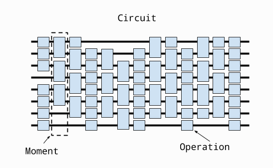
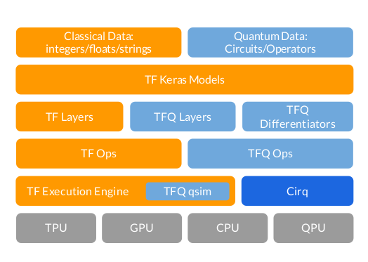

QUANTUM MACHINE LEARNING
Sfruttare le potenzialità del quantum computing per realizzare algoritmi di machine learning ed in questo
caso di Deep Learning come la Convolution Neural Network denominata QCNN.
Nel quantum computing non è possibile caricare i dati in quanto non esiste un computer fisico come siamo abituati
nei classici computer per cui dobbiamo inserire i dati in nostro possesso in un circuito che andiamo a definire
.
Il primo passo da compiere è appunto definire un CLUSTER STATE composta da un circuito come possiamo vedere nella
figura sottostante:

Un circuito quantico è composto da diverse Operation.
Una operation, ad esempio un gate, è una operazione che modifica lo stato di un qubit.
L'insieme di diverse operation compongono un Moment che come si evince dall'immagine è composto da diverse operationeseguite su diversi
qubit.
Mentre la totalità dei Moment compongono il Circuit.
Prima si definisce il circuito poi si possono aggiungere uno o più Moment con diverse tecniche descritte nella pagina relativa a Cirq.
Quindi per preparare il CLUSTER STATE definiano il circuito ed aggiungiamo i gate che permetteranno di misurare
lo stato dei qubits.
L'output ottenuto dal circuito deve essere poi trasformato in tensor per essere poi inserito come input
nella rete neurale tramite la funzione tfq.convert_to_tensor.
Ottenuto il tensor passiamo a costruire il neural network con tfq layer che rispecchiano quelli di un classico
Keras network es. tf.keras.inputLayer.
Le fasi successive sono la QConvoulation e la QPool che vengono implementati con il PQC.Layer
Ora vediamo un grafico per vedere l'interazione tra Cirq, TensorFlow-Quantum e Quantum computing

# -*- coding: utf-8 -*-
"""myqcnn.ipynb
!pip install --upgrade tensorflow==2.1.0
!pip install cirq
!pip install tensorflow-quantum
# Commented out IPython magic to ensure Python compatibility.
import tensorflow as tf
import tensorflow_quantum as tfq
import cirq
import sympy
import numpy as np
import seaborn as sns
import collections
# visualization tools
# %matplotlib inline
import matplotlib.pyplot as plt
from cirq.contrib.svg import SVGCircuit
!unzip cat-and-dog.zip -d data
import cv2
image = cv2.imread('data/test_set/test_set/cats/cat.4001.jpg',0) #grayscale
ims = cv2.resize(image, None, fx=0.1, fy=0.1)
ims.shape
from google.colab.patches import cv2_imshow
cv2_imshow(ims)
import os
testi =np.empty((1,4,4))
print(len(testi))
print(testi)
testitra =np.empty((1,4,4))
test_cat = os.listdir('data/test_set/test_set/cats')
test_cat = [x for x in test_cat if x.endswith('.jpg')]
for tes in test_cat:
t = cv2.imread('data/test_set/test_set/cats/'+tes,0) #grayscale
#print(t.shape)
t1 = cv2.resize(t,(4,4))
t = t1[ np.newaxis]/255.0
#print(t.shape)
testi = np.vstack((testi, t))
test_dog = os.listdir('data/test_set/test_set/dogs')
test_dog = [x for x in test_dog if x.endswith('.jpg')]
for tes in test_dog:
t = cv2.imread('data/test_set/test_set/dogs/'+tes, 0)
t1 = cv2.resize(t,(4,4))
t = t1[ np.newaxis]/255.0
testi = np.vstack((testi, t))
train_cat = os.listdir('data/training_set/training_set/cats')
train_cat = [x for x in train_cat if x.endswith('.jpg')]
for tes in train_cat:
t = cv2.imread('data/training_set/training_set/cats/'+tes, 0)
t1 = cv2.resize(t,(4,4))
t = t1[ np.newaxis]/255.0
testitra = np.vstack((testitra, t))
train_dog = os.listdir('data/training_set/training_set/dogs')
train_dog = [x for x in train_dog if x.endswith('.jpg')]
for tes in train_dog:
t = cv2.imread('data/training_set/training_set/dogs/'+tes, 0)
t1 = cv2.resize(t,(4,4))
t = t1[ np.newaxis]/255.0
testitra = np.vstack((testitra, t))
testi = np.delete(testi, 0,0)
testitra = np.delete(testitra, 0,0)
len(testi)
testi.shape
x_test = testi
x_train = testitra
print(len(x_train))
y_test,y_train = [],[]
y_test_cat,y_test_dog, y_train_cat, y_train_dog = [],[],[],[]
for i in range(len(test_cat)):
y_test_cat.append(0)
for i in range(len(test_dog)):
y_test_dog.append(1)
for i in range(len(train_cat)):
y_train_cat.append(0)
for i in range(len(train_dog)):
y_train_dog.append(1)
y_test= y_test_cat+ y_test_dog
y_train= y_train_cat+ y_train_dog
y_test = np.array(y_test)
y_train = np.array(y_train)
print(len(y_train))
print(len(y_test),len(y_train))
print(len(x_test),len(x_train))
"""Rescale the images from [0,255] to the [0.0,1.0] range.
x_train, x_test = x_train[..., np.newaxis]/255.0, x_test[..., np.newaxis]/255.0
"""
x_train.shape
THRESHOLD = 0.5
#trasformo in binario i valori dati delle immagini per la fase di training e testing se valore > 0.5 assegno 1 altrimenti 0
x_train_bin = np.array(x_train >THRESHOLD, dtype=np.float32)
x_test_bin = np.array(x_test> THRESHOLD, dtype=np.float32)
x_train_bin.shape
"""The qubits at pixel indices with values that exceed a threshold, are rotated through an gate."""
def convert_to_circuit(image):
"""Encode truncated classical image into quantum datapoint."""
values = np.ndarray.flatten(image)
print(values)
qubits = cirq.GridQubit.rect(4, 4)
circuit = cirq.Circuit()
for i, value in enumerate(values):
if value:
circuit.append(cirq.X(qubits[i]))
return circuit
x_train_circ = [convert_to_circuit(x) for x in x_train_bin]
x_test_circ = [convert_to_circuit(x) for x in x_test_bin]
#Here is the circuit created for the first example (circuit diagrams do not show qubits with zero gates):
SVGCircuit(x_train_circ[0])
bin_img = x_train_bin[0:,:]
indices = np.array(np.where(bin_img)).T
indices
x_train_tfcirc = tfq.convert_to_tensor(x_train_circ)
x_test_tfcirc = tfq.convert_to_tensor(x_test_circ)
class CircuitLayerBuilder():
def __init__(self, data_qubits, readout):
self.data_qubits = data_qubits
self.readout = readout
def add_layer(self, circuit, gate, prefix):
for i, qubit in enumerate(self.data_qubits):
symbol = sympy.Symbol(prefix + '-' + str(i))
circuit.append(gate(qubit, self.readout)**symbol)
demo_builder = CircuitLayerBuilder(data_qubits = cirq.GridQubit.rect(4,1),
readout=cirq.GridQubit(-1,-1))
circuit = cirq.Circuit()
demo_builder.add_layer(circuit, gate = cirq.XX, prefix='xx')
SVGCircuit(circuit)
def create_quantum_model():
"""Create a QNN model circuit and readout operation to go along with it."""
data_qubits = cirq.GridQubit.rect(4, 4) # a 4x4 grid.
readout = cirq.GridQubit(-1, -1) # a single qubit at [-1,-1]
circuit = cirq.Circuit()
# Prepare the readout qubit.
circuit.append(cirq.X(readout))
circuit.append(cirq.H(readout))
builder = CircuitLayerBuilder(
data_qubits = data_qubits,
readout=readout)
# Then add layers (experiment by adding more).
builder.add_layer(circuit, cirq.XX, "xx1")
builder.add_layer(circuit, cirq.ZZ, "zz1")
# Finally, prepare the readout qubit.
circuit.append(cirq.H(readout))
return circuit, cirq.Z(readout)
model_circuit, model_readout = create_quantum_model()
# Build the Keras model.
model = tf.keras.Sequential([
# The input is the data-circuit, encoded as a tf.string
tf.keras.layers.Input(shape=(), dtype=tf.string),
# The PQC layer returns the expected value of the readout gate, range [-1,1].
tfq.layers.PQC(model_circuit, model_readout),
])
y_train_hinge = 2.0*y_train-1.0
y_test_hinge = 2.0*y_test-1.0
def hinge_accuracy(y_true, y_pred):
y_true = tf.squeeze(y_true) > 0.0
y_pred = tf.squeeze(y_pred) > 0.0
result = tf.cast(y_true == y_pred, tf.float32)
return tf.reduce_mean(result)
model.compile(
loss=tf.keras.losses.Hinge(),
optimizer=tf.keras.optimizers.Adam(),
metrics=[hinge_accuracy])
print(model.summary())
EPOCHS = 3
BATCH_SIZE = 32
NUM_EXAMPLES = len(x_train_tfcirc)
x_train_tfcirc_sub = x_train_tfcirc[:NUM_EXAMPLES]
y_train_hinge_sub = y_train_hinge[:NUM_EXAMPLES]
qnn_history = model.fit(
x_train_tfcirc_sub, y_train_hinge_sub,
batch_size=32,
epochs=EPOCHS,
verbose=1,
validation_data=(x_test_tfcirc, y_test_hinge))
qnn_results = model.evaluate(x_test_tfcirc, y_test)